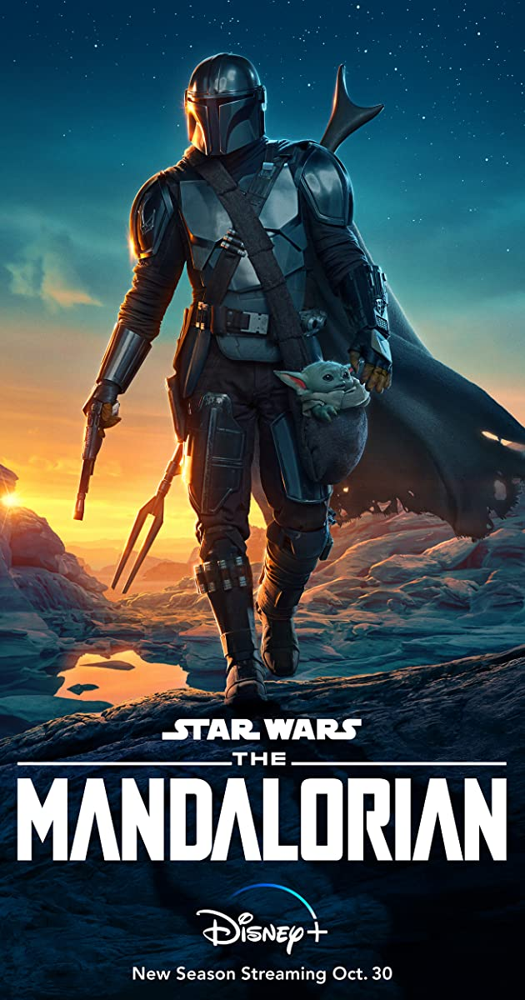

Again, there is quite a variety of favorite TV shows. But, I do love a lot of Disney shows, such as Phineas and Ferb and the Mandalorian in addition to true crime!
 Law and Order (1990)...
Filmed on location in New York, the drama showcases the sometimes-complex process of determining guilt or innocence, while lives hang in the balance. Often inspired by the latest headlines, the plots highlight legal, ethical or personal dilemmas to which people can relate.
Law and Order (1990)...
Filmed on location in New York, the drama showcases the sometimes-complex process of determining guilt or innocence, while lives hang in the balance. Often inspired by the latest headlines, the plots highlight legal, ethical or personal dilemmas to which people can relate.
Phineas and Ferb... Phineas Flynn and his stepbrother, Ferb Fletcher, are determined to make every day of their summer vacation fun. They try building a full-scale roller coaster, becoming musicians, building a backyard beach, and traveling back in time to meet dinosaurs. Their family pet, Perry the Platypus, doubles as a secret agent and battles evil. Meanwhile, older sister Candace is tattling on them to Mom and Dad, though she can never seem to catch them in the act.
The Mandalorian... A lone gunfighter makes his way through the outer reaches of the galaxy, far from the authority of the New Republic.